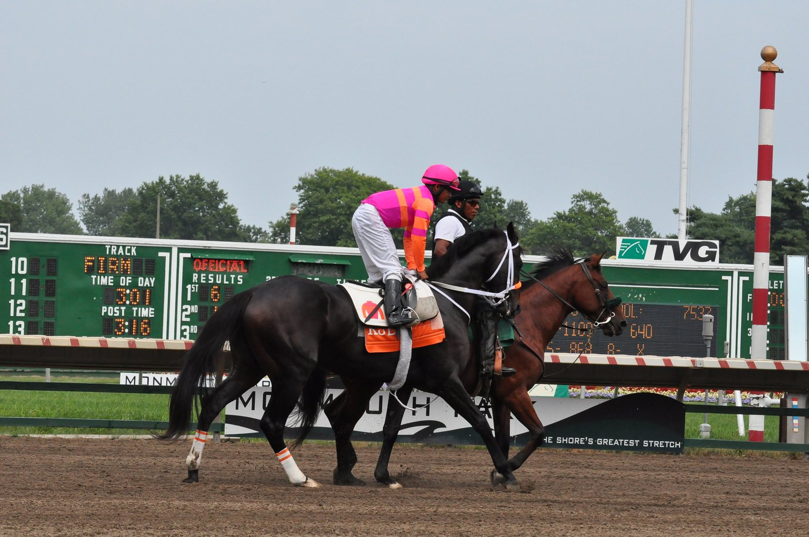

Alexei adelanta su vuelta: Molyneux Hurdle de Aintree el 7 de noviembre
Joe Tizzard ha elegido el Molyneux Hurdle, Grado 2 de Aintree, para el regreso de Alexei. Después irá al Fighting Fifth. El objetivo de fondo es meterse entre la élite de vallas.

El plan inicial era otro. Joe Tizzard pensaba esperar al Fighting Fifth para estrenar la temporada de Alexei, pero el caballo le ha hecho cambiar de idea. "Iba a esperar al Fighting Fifth, pero está en una forma estupenda en casa y los caballos empiezan a estar a punto, así que adelante con él, así de sencillo", explicó el preparador.
La decisión la cerró tras hablar con Garth Broom, copropietario del caballo, que dio su visto bueno. La hoja de ruta queda así: primero el Molyneux Hurdle de Aintree, la carrera que antes se disputaba en Wincanton como Elite Hurdle, y después el Fighting Fifth.
Alexei vuelve tras un curso de progresión constante. Debutó con un segundo puesto en el Welsh Champion Hurdle y luego se impuso en dos hándicaps de buena dotación, en Ascot y en Cheltenham. Tizzard le subió entonces de categoría y la respuesta fue inmediata: ganó el Kingwell Hurdle de Wincanton, un Grado 2.
En los dos grandes festivales de primavera se quedó cerca de lo más alto. Fue cuarto en el Champion Hurdle de Cheltenham y tercero en el Aintree Hurdle.
Esa distancia con los mejores de la división es la que su preparador espera recortar este invierno. "No creo que necesite mejorar demasiado para estar metido de lleno en las preparatorias del Champion Hurdle. Soy un poco parcial, pero este año parece un caballo más grande y más fuerte. ¿Por qué no va a volver a mejorar?", planteó Tizzard.
Las casas de apuestas le ofrecen a 25/1 para el Champion Hurdle que se correrá en Cheltenham en marzo. Antes tendrá que responder en Aintree el 7 de noviembre.
Por Martín Larrañeta